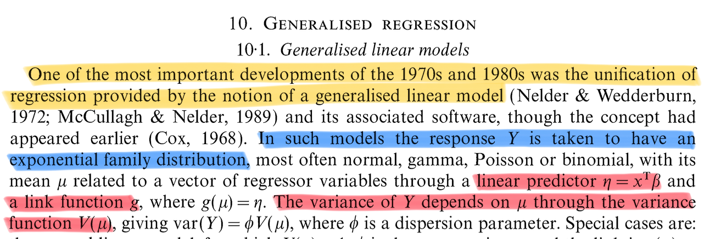

Introduction
Statistical Inference - PhD EcoStatData
Homepage

“I would like to think of myself as a scientist, who happens largely to specialise in the use of statistics.”
Sir David Cox (1924-2022)
This course will cover the following topics:
- Point estimation
- Exponential families
- Generalized linear models
- …and more advanced topics
This is a Ph.D.-level course, so it is assumed that you have already been exposed to all these topics to some extent.
We aim to (briefly!) touch upon many key concepts of classical statistical inference from the 20th century.
Fundamental topics such as hypothesis testing are not covered here, as they are addressed in another module.
To introduce the main ideas, I will borrow the words of Davison (2001) — a source you are encouraged to read!
Foundations and Bayesian statistics

Principles: sufficiency, conditionality and likelihoods


Likelihood

- The study of the likelihood has gone far beyond the classical textbook description. Specialized topics that have attracted considerable attention include:
- Likelihood ratio tests and their large-sample properties
- Conditional and marginal likelihoods
- Modified profile likelihoods
- Restricted maximum likelihood
- Likelihood ratio tests and their large-sample properties
Estimating functions

Generalized linear models


Quasi likelihoods

Nonparametric (local) models

Bayesian methods


The future


Advice for a young investigator

Santiago Ramon Y Cajal (1852–1934)
The former list of practical advice is probably effective but questionable. For sure, it lacks perspective.
In looking for principles defining a good researcher, I once again need to borrow the words of somebody else.
Santiago Ramón y Cajal is a fascinating personalities in science. He was one of the most important neuroanatomist of his century.
Cajal was also a thoughtful and inspired teacher.
“The advice” became vehicle for Cajal to write down the thoughts and anecdotes he would give to students and colleagues about how to make important original contributions in any branch of science.
This book was written in 1898. The world was different, and so was academia. Yet, the book feels remarkably modern.
References